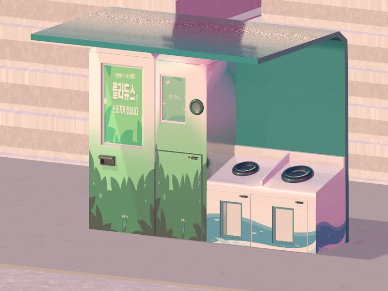
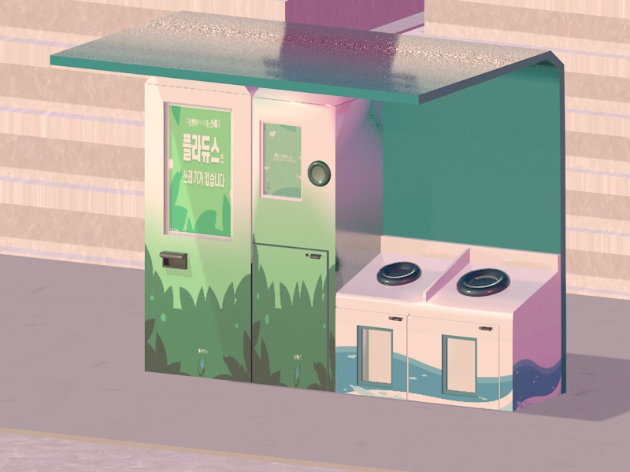
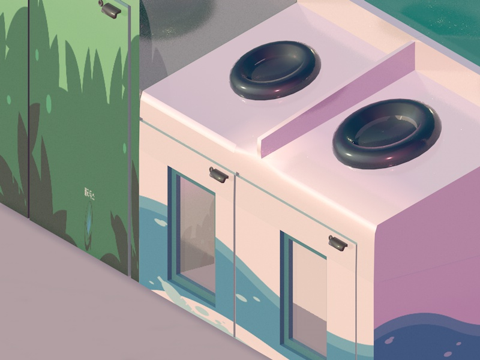
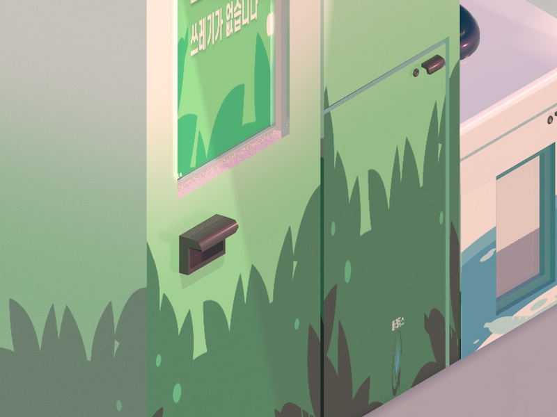

PLADUCE

Cinema 4D _ 리유저블 용기 수거함
기업, 지자체와 협업하며 배달어플과 자매 어플로 진행되는 서비스이다.
해당 서비스를 이용하는 소비자에게는 환경 보호에 동참에 대한 보상으로
‘지역화폐로 전환 가능한 포인트’를 지급한다.
용기를 배출하지 않는 문제가 발생하는 것을 우려하여,
수거함에 반납한 후 어플로 수거 확인(인증)을 해야 포인트를 제공받을 수 있다.
3D MODELING CUT
 



카페 음료 컵과 같이 작은 리유저블 용기를 넣는 수거함 두 종료가 있다.
수거함은 아파트나 빌라 등 쓰레기 분리시설에 배치 되어있어 바로 처리할 수 있다.